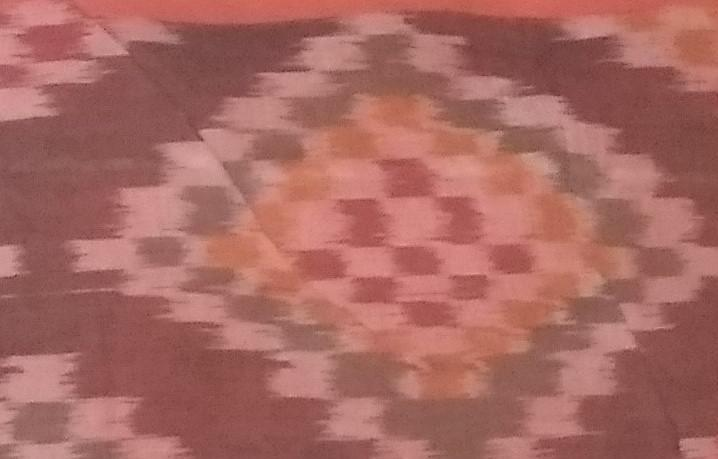
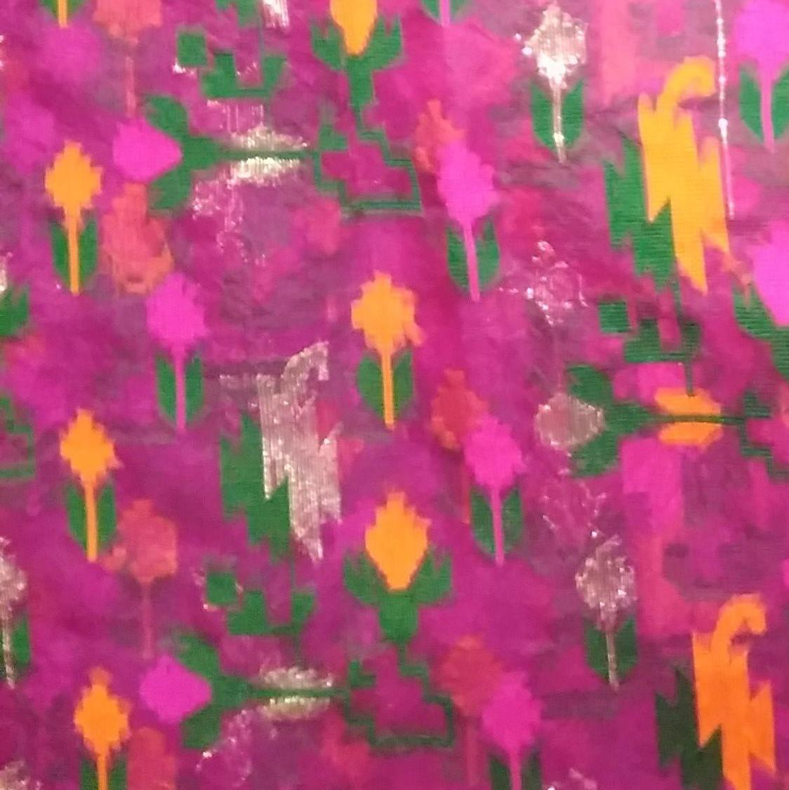
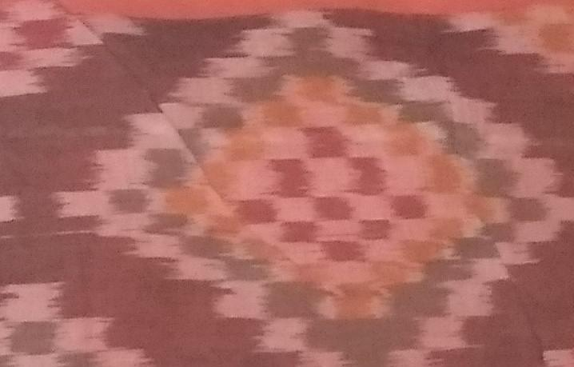
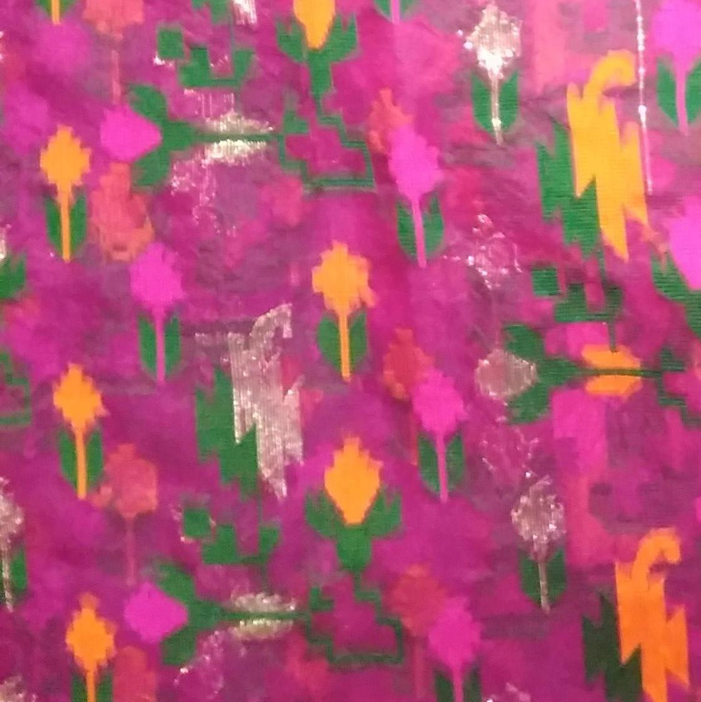
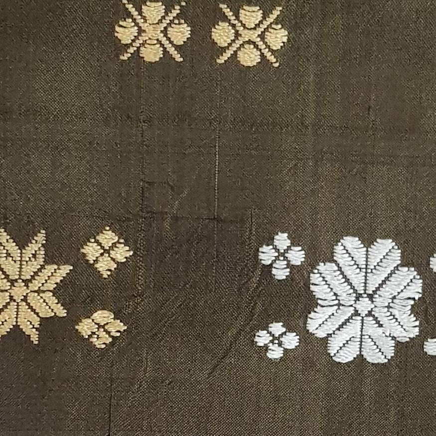
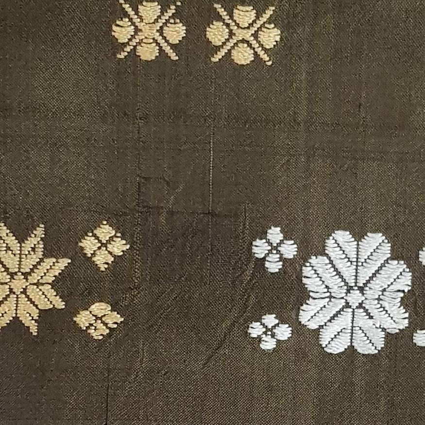
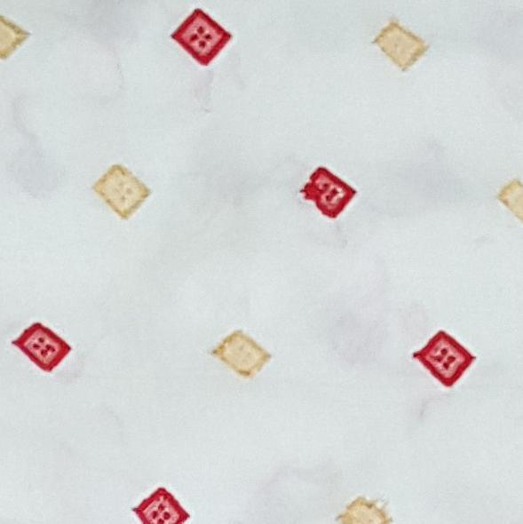
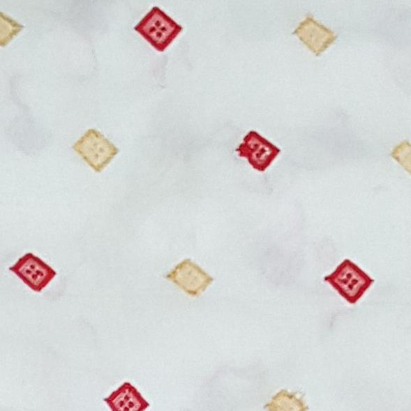

Dataset - Indian Saree & Handloom Clothes
Guwahati, India

 





 

 



About
The "Saree & Handloom Clothes Dataset" is a repository of natural images of Indian usual sarees and sarees prepared via the handloom. The dataset closely captures the differences in the texture, style and design between the two collection of images. The dataset was prepared as part of a research-oriented academic project at the Department of Computer Science & Engineering, Assam Engineering College.
The GitHub repository of the original project work is available here.
This demo video presents an overview of the design tool developed in the project.
Description of the dataset
As stated already, the dataset comprises of two collections of images - normal sarees and handloom sarees. The exact details about the collections are stated below.
Normal Sarees
- Number of Images: 580
- Number of Images (after crop): 2900
- Image Format: RGB - JPG/JPEG
- Image Resolution: 256 X 256 X 3
- Size of Collection: 111 MB
- Number of Images (after augmentation): 26100
Handloom Sarees
- Number of Images: 33
- Number of Images (after crop): 165
- Image Format: RGB - JPG/JPEG
- Image Resolution: 256 X 256 X 3
- Size of Collection: 18 MB
- Number of Images (after augmentation): 1185
The dataset can be downloaded from here. New images are being included to the dataset.
Applications of the dataset
The original project which led to the collection of this dataset was motivated from the idea of employing generative AI techniques for generating new designs for handlooms by learning from the distribution of both normal and handloom sarees. The purpose of the project can be summarized to be - (a) generation of artistic and visually-appealing designs, (b) building a cloth recommendation system.